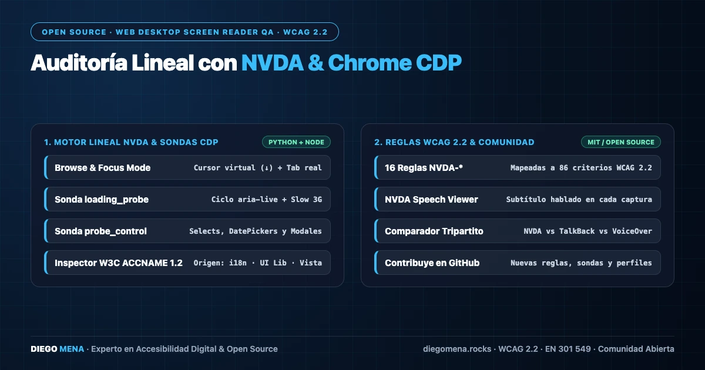

NVDA A11Y Auditor: auditorías lineales con NVDA y Chrome CDP
Auditor lineal para Web Desktop con NVDA y Chrome vía CDP. Emula modo exploración y foco, extrae subtítulos del speech viewer en vivo, inspecciona W3C AccName 1.2 y evalúa 86 criterios WCAG 2.2.

Auditar con un lector de pantalla real es la única forma de conocer la experiencia verdadera de una persona usuaria ciega, pero hacerlo de forma manual es lento y difícil de reproducir. NVDA A11Y Auditor resuelve ese problema orquestando NVDA en Windows para recorrer la página de forma lineal y registrar exactamente lo que el lector anuncia.
Dos sondas de navegación: exploración y foco
La herramienta ejecuta dos pasadas independientes sobre la misma URL. La sonda de modo exploración (browse mode) simula las teclas de navegación rápida de NVDA para recorrer encabezados, enlaces, formularios y regiones. La sonda de foco (focus mode) tabula secuencialmente por cada control interactivo, comparando el orden de tabulación real contra el orden visual y el DOM.
Speech viewer como fuente de verdad
En lugar de inferir la salida del lector desde el DOM, el auditor captura los subtítulos del speech viewer de NVDA en tiempo real. Cada anuncio se asocia al elemento que lo produjo, lo que permite detectar nombres accesibles vacíos, roles incorrectos o anuncios duplicados con evidencia literal de lo que escuchó el usuario.
Inspección AccName vía Chrome DevTools Protocol
En paralelo a la escucha, el auditor abre una sesión de Chrome DevTools Protocol (CDP) y consulta el árbol de accesibilidad del navegador para evaluar el algoritmo W3C AccName 1.2: aria-label, aria-labelledby, contenido de texto y atributos nativos. El resultado se contrasta con el anuncio de NVDA para detectar divergencias entre lo computado y lo verbalizado.
python -m nvda_auditor --url https://ejemplo.com \
--probes browse,focus --wcag 2.2 --report html
# Salida: reporte interactivo con 86 criterios evaluados
# + evidencia literal del speech viewer por hallazgo86 criterios WCAG 2.2 y comparativa cross-platform
El reporte final evalúa 86 criterios de conformidad WCAG 2.2 y cruza los resultados con sus homólogos VoiceOver A11Y Auditor (iOS) y TalkBack A11Y Auditor (Android). Esa comparativa cross-platform revela comportamientos divergentes entre lectores de pantalla frente al mismo marcado, un punto ciego habitual en las auditorías que solo usan un único AT.
El proyecto es open source y está disponible en github.com/ingelectronicadj/nvda-a11y-auditor.